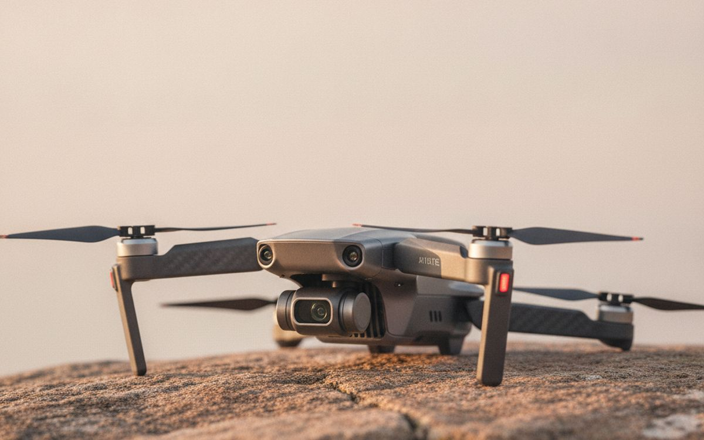
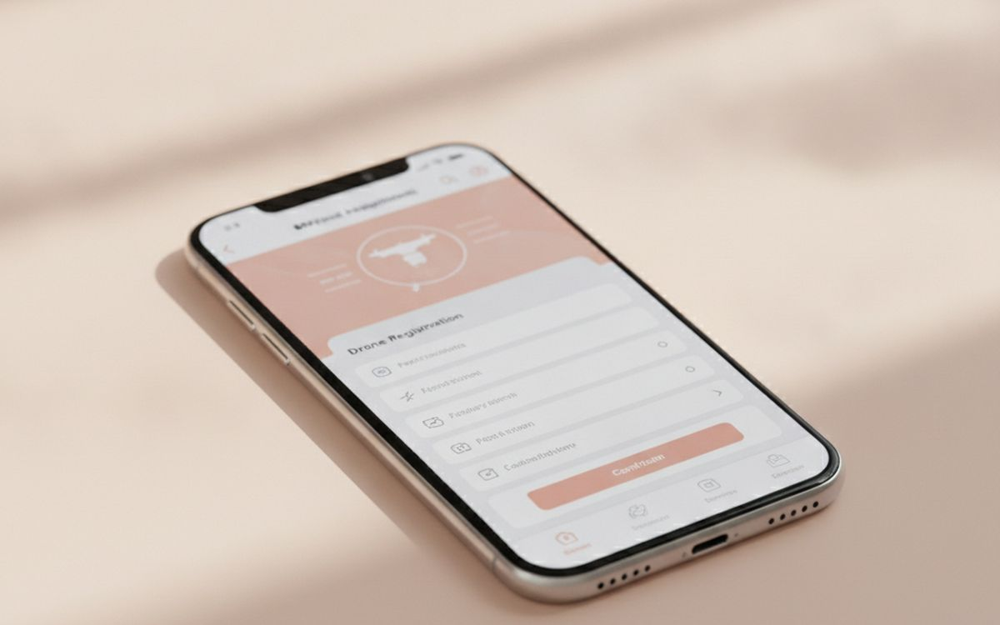
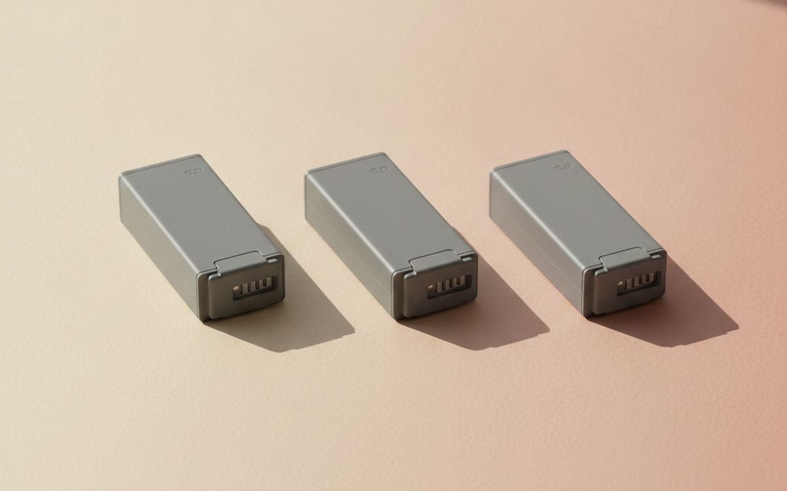
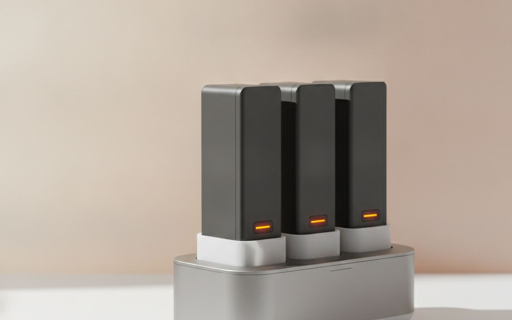
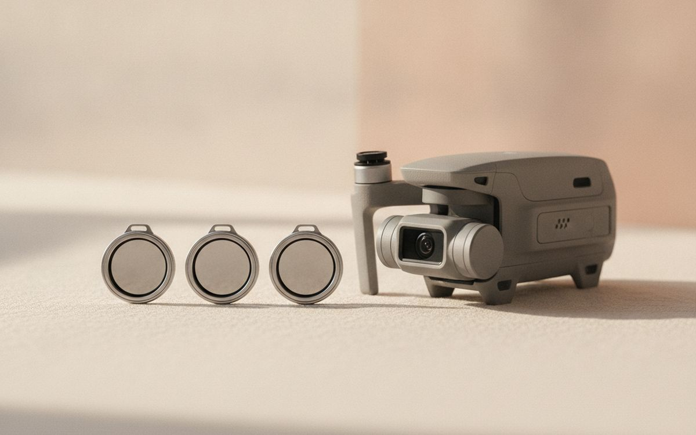
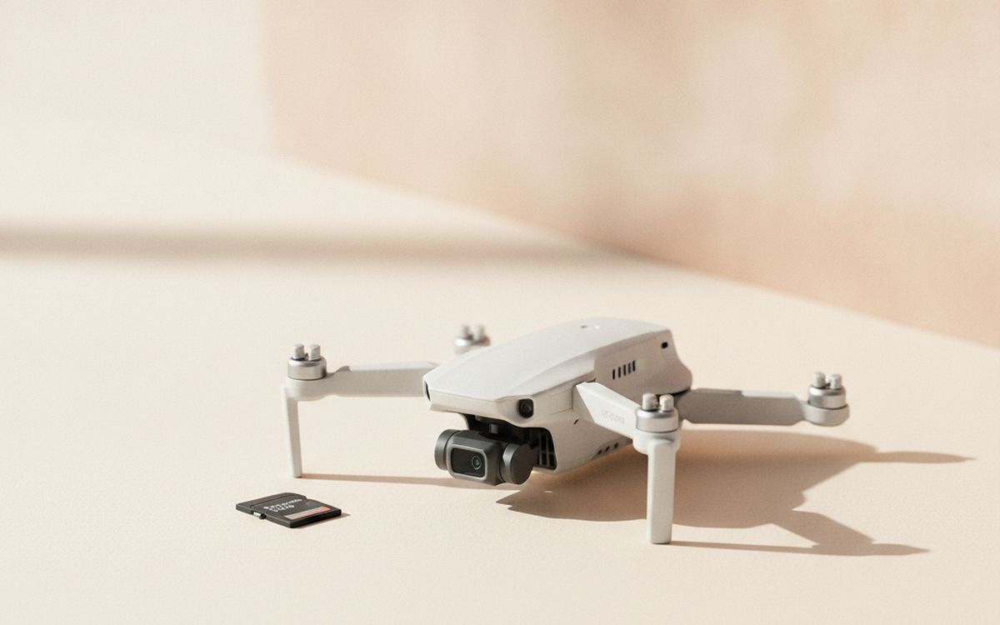
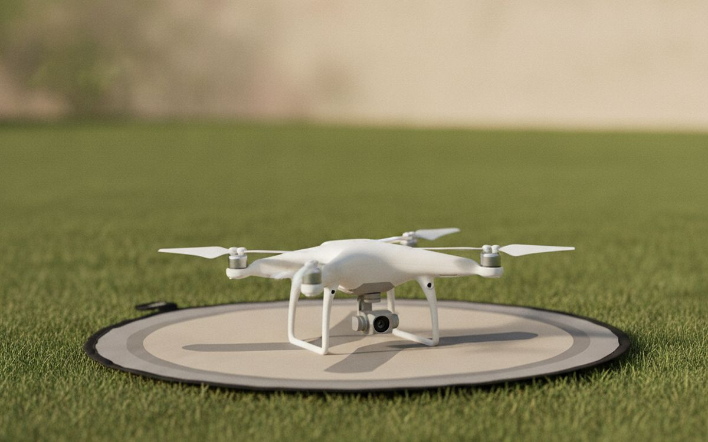
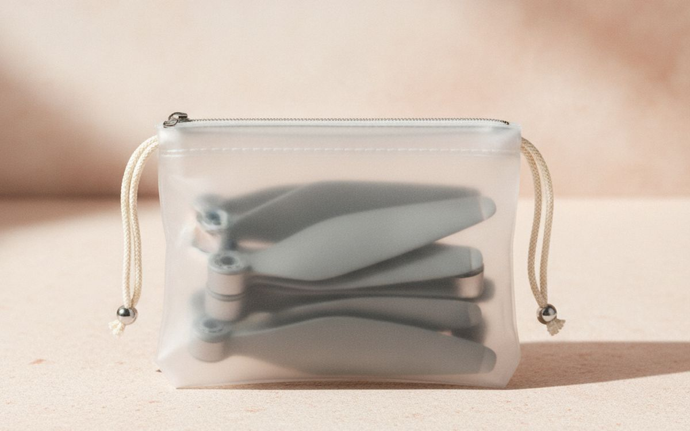
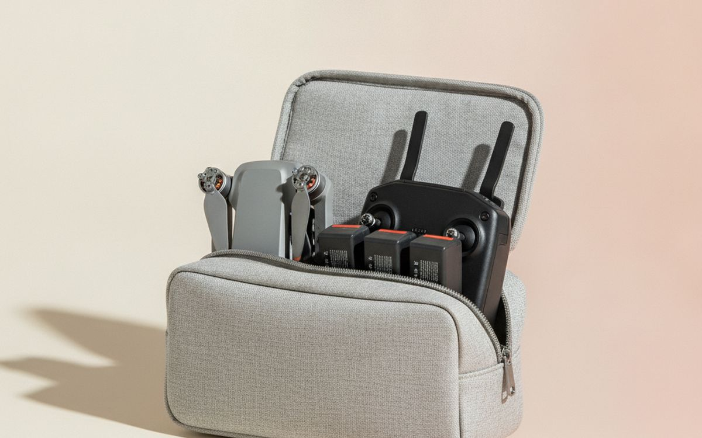
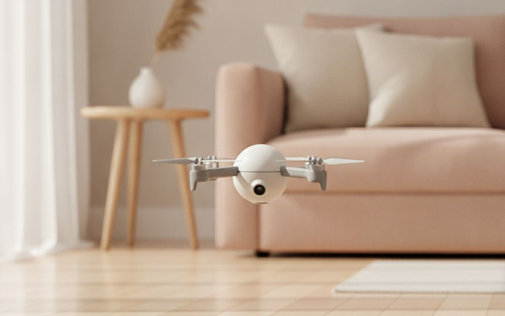

The drone aisle is split between two worlds: toy quadcopters that drift away in a breeze and last seven minutes, and proper camera drones that hold position in wind and shoot footage that looks like a travel advert. The price gap is smaller than it used to be, and the cheap end is where most disappointment happens.
This list starts with the drone and then covers the few extras that turn one short flight into a proper outing. It also covers the rules, because in the US a few simple steps are required before you fly at all, and skipping them is an easy way to get a fine.
Prices below are approximate street prices at the time of writing and move around constantly, especially during sale events. Treat them as a rough band for budgeting, not a quote. Always check the live listing before you buy.
Kurz gesagt
A sub-250g folding camera drone with GPS
The first drone to buy
Hinweis. Die Links auf dieser Seite sind Affiliate-Links. Wenn Sie darüber kaufen, erhalten wir unter Umständen eine Provision ohne Mehrkosten für Sie. Das beeinflusst weder die Auswahl noch die Reihenfolge dieser Liste.
Wie wir ausgewählt haben
These picks come from published drone reviews, FAA guidance, hobby forums and long-run owner reports, cross-checked against current retail listings. We have not personally tested every item here. Availability of some drone brands in the US has changed with trade rules, so check current stock and support before you buy.
Auf einen Blick
Die Preise sind Näherungswerte zum Zeitpunkt der Erstellung und ändern sich häufig.
Die Empfehlungen

01 · The first drone to buyA sub-250g folding camera drone with GPS
Drones under 250 grams face lighter rules in many countries and are small enough to carry everywhere. The good ones still have GPS position hold, return-to-home, obstacle sensing on some models and a stabilised 4K camera. DJI's Mini series defined the category, and alternatives from brands like Potensic and Holy Stone have closed some of the gap. Check the exact weight of the version you buy, because adding a larger battery can push it over 250g. Buy from a store with local warranty support. The case for it: holds position steadily with GPS, lighter rules in many countries, and folds small enough for any bag. The trade-off is real: small drones struggle in strong wind and larger "plus" batteries can push it over 250g, so weigh that against how often it would actually get used.
$300-600Der Kompromiss: Small drones struggle in strong wind
Warum es hier steht
- Holds position steadily with GPS
- Lighter rules in many countries
- Folds small enough for any bag
Gut zu wissen
- Small drones struggle in strong wind
- Larger "plus" batteries can push it over 250g

02 · Flying legally in the USThe FAA TRUST test and registration check
Recreational flyers in the US must pass the free online TRUST test and carry proof. Drones over 250g, or any drone flown for commercial use, need FAA registration, which currently costs a few dollars. You also need to follow Remote ID rules and avoid restricted airspace near airports, stadiums and national parks. Apps like B4UFLY show where you can fly. Check the FAA's current rules before your first flight; they get updated. The case for it: required before you fly, free test, cheap registration, and apps make airspace easy to check. The trade-off is real: rules change, so check again each year and many parks and beaches ban drones locally, so weigh that against how often it would actually get used.
Free-$5Der Kompromiss: Rules change, so check again each year
Warum es hier steht
- Required before you fly
- Free test, cheap registration
- Apps make airspace easy to check
Gut zu wissen
- Rules change, so check again each year
- Many parks and beaches ban drones locally

03 · Real flying timeTwo or three spare batteries
One battery gives you 20-30 minutes in ideal conditions and less in wind or cold. That is barely enough to find the shot. Two or three spares turn a quick buzz into a proper session. Most drones sell a "fly more" bundle with batteries, a charging hub and a bag, and it is nearly always cheaper than buying them separately. Buy genuine batteries; cheap clones can swell and fail. The case for it: triples your flying time, bundles are cheaper than separate buys, and lets you retake shots without going home. The trade-off is real: lithium batteries have airline carry rules and store at partial charge if unused for weeks, so weigh that against how often it would actually get used.
$40-70 eachDer Kompromiss: Lithium batteries have airline carry rules
Warum es hier steht
- Triples your flying time
- Bundles are cheaper than separate buys
- Lets you retake shots without going home
Gut zu wissen
- Lithium batteries have airline carry rules
- Store at partial charge if unused for weeks

04 · Charging without babysittingA multi-battery charging hub
Charging three batteries one at a time means a whole evening of swapping. A hub charges them in sequence overnight, and many can also charge your controller and phone. Some work from a USB-C power bank or car charger, which is useful on road trips. Get the one designed for your drone model, since the connectors differ. The case for it: charges several batteries unattended, some charge from a car or power bank, and often included in bundles. The trade-off is real: model-specific connectors and charging in sequence still takes hours, so weigh that against how often it would actually get used.
$30-60Der Kompromiss: Model-specific connectors
Warum es hier steht
- Charges several batteries unattended
- Some charge from a car or power bank
- Often included in bundles
Gut zu wissen
- Model-specific connectors
- Charging in sequence still takes hours

05 · Smooth, cinematic videoND filter set
On a bright day, drone cameras use very fast shutter speeds, which makes video look jittery and harsh. ND filters are sunglasses for the camera: they cut light so the shutter can slow down and motion blurs naturally. A set of three or four strengths covers most conditions. They snap onto the gimbal, so they must match your model. This is the cheapest upgrade to how your footage looks. The case for it: smoother, more natural video, handles bright beach and snow scenes, and small and light. The trade-off is real: poorly made filters can upset the gimbal and not needed for still photos, so weigh that against how often it would actually get used.
$30-60Der Kompromiss: Poorly made filters can upset the gimbal
Warum es hier steht
- Smoother, more natural video
- Handles bright beach and snow scenes
- Small and light
Gut zu wissen
- Poorly made filters can upset the gimbal
- Not needed for still photos

06 · Recording 4K without dropped framesA fast microSD card
4K video writes a lot of data, and a slow card causes stuttering or stopped recordings. Look for a card rated U3 and V30 from SanDisk, Samsung or Lexar, bought from an official store. 128GB is a good size. Counterfeit cards are common on marketplaces, so check capacity when it arrives. The case for it: prevents dropped frames and failed recordings, holds hours of footage, and cheap. The trade-off is real: fakes are common and offload footage the same day, so weigh that against how often it would actually get used. Priced around $15-30, it is easy to justify even if it only ends up getting occasional rather than daily use.
$15-30Der Kompromiss: Fakes are common
Warum es hier steht
- Prevents dropped frames and failed recordings
- Holds hours of footage
- Cheap
Gut zu wissen
- Fakes are common
- Offload footage the same day

07 · Dusty and grassy take-offsA landing pad
Taking off from sand, dust or long grass sprays grit into the motors and gimbal and can tip the drone over. A folding landing pad gives a clean, flat spot and makes the drone easier to see when it returns. It folds into a small circle and weighs almost nothing. A cheap way to protect the most fragile parts. The case for it: keeps sand and grit out of motors, flat, visible landing spot, and folds small. The trade-off is real: needs pegs or weights in wind and one more thing to pack, so weigh that against how often it would actually get used.
$15-25Der Kompromiss: Needs pegs or weights in wind
Warum es hier steht
- Keeps sand and grit out of motors
- Flat, visible landing spot
- Folds small
Gut zu wissen
- Needs pegs or weights in wind
- One more thing to pack

08 · The first clipped branchSpare propellers
Every new pilot clips something eventually. A chipped propeller makes the drone vibrate and ruins footage, and can fail in flight. Spares are cheap and replacing them takes a minute with the included screwdriver. Keep a set in the bag at all times and check props before each flight. The case for it: fixes the most common damage, quick to replace, and cheap. The trade-off is real: must match your model exactly and always check for chips before flying, so weigh that against how often it would actually get used. For $10-20, it is a small, low-risk addition to the list rather than a centrepiece purchase you need to think hard about.
$10-20Der Kompromiss: Must match your model exactly
Warum es hier steht
- Fixes the most common damage
- Quick to replace
- Cheap
Gut zu wissen
- Must match your model exactly
- Always check for chips before flying

09 · Carrying it all togetherA shoulder bag or hard case
A drone, controller, batteries, cables and filters add up to a lot of small pieces. A fitted bag keeps them together and protects the gimbal. Hard cases are better for checked travel or car boots; soft shoulder bags are better for hiking. Choose one with a slot for a tablet if you use one as a screen. The case for it: protects the gimbal, keeps small parts together, and makes it easy to grab and go. The trade-off is real: fitted cases only suit one model and batteries must go in carry-on when flying, so weigh that against how often it would actually get used.
$25-60Der Kompromiss: Fitted cases only suit one model
Warum es hier steht
- Protects the gimbal
- Keeps small parts together
- Makes it easy to grab and go
Gut zu wissen
- Fitted cases only suit one model
- Batteries must go in carry-on when flying

10 · Learning to fly without GPS helpA cheap indoor practice drone
GPS drones are so stable that pilots never learn to fly manually, then panic when GPS drops near buildings or trees. A small, cheap indoor drone with no GPS teaches real stick control in the living room, and crashing it costs nothing. An hour of practice makes you calmer when the good drone does something unexpected. The case for it: teaches real stick control, crash-friendly, and great for kids too. The trade-off is real: short battery life and poor cameras and hard to control outdoors in any breeze, so weigh that against how often it would actually get used.
$30-60Der Kompromiss: Short battery life and poor cameras
Warum es hier steht
- Teaches real stick control
- Crash-friendly
- Great for kids too
Gut zu wissen
- Short battery life and poor cameras
- Hard to control outdoors in any breeze
Häufige Fragen
Do I need a licence to fly a drone for fun in the US?
You need to pass the free TRUST test and carry proof. Drones over 250g must also be registered. Commercial use needs a Part 107 certificate.
Why does 250 grams matter?
Many countries, including the US for recreational flying, treat drones under 250g more lightly. Check local rules before you travel with one.
How long do drone batteries last?
Usually 20-30 minutes per battery in good conditions, less in wind or cold. Most people carry at least three.
Can I fly in a national park?
US National Parks ban recreational drone flights in most cases. Check the park's own rules and the B4UFLY app.
Angebote heute
Sieh, was gerade reduziert ist.
Angebote →← Alle Ratgeber
Als AliExpress-Affiliate verdienen wir an qualifizierten Käufen. Preise und Verfügbarkeit entsprechen dem Stand der Veröffentlichung und können sich ändern.